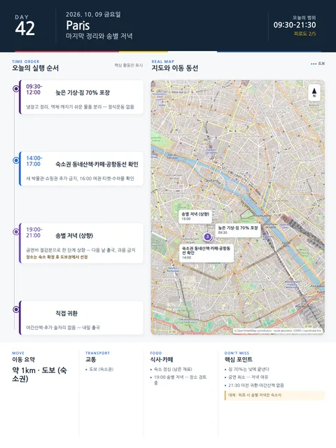

Day 42 · 10/9 금 · Paris
- 핵심 실행
- 짐 70% 포장·송별 저녁 (공연 취소)
- 권장 출발
- 낮 포장 완료
- 완충
- 저녁은 과음 금지
- 예약
- 1건 — 완료 0 · 미확정 1 · 현황
시간표
| 시간 | 일정 | 실행 포인트 |
|---|---|---|
| 09:30–10:30 | 늦은 기상·아침 | 정식운동 없음 |
| 10:30–12:00 | 짐 70% 포장·냉장고 정리 | 액체·깨지기 쉬운 물품 분리 |
| 12:00 | 가벼운 숙소 점심 | 남은 재료 사용 |
| 14:00–16:00 | 숙소권 가벼운 동네산책·카페 | 새 박물관·쇼핑권 추가 금지 |
| 16:00–17:00 | 숙소 휴식·공항동선 최종 확인 | 여권·티켓·수하물 확인 |
| 19:00–21:00 | 송별 저녁 | 장소는 대체안 검토 중 — 다음 날 출국 기준 과음 금지 |
| 21:30 이전 | 숙소 귀환 | 마지막 포장 마무리, 야간산책 없음 |
피로도
2/5
이 날의 메모
마지막 정리와 송별 저녁 — Hamlet 취소 대체 검토
공연 3건(Il Barbiere·Este Mundo·Hamlet)은 비용 사유로 취소했다(2026-08-10). 저녁 대체안은 검토 중이다.
상세 실행 확인
- 최고 리스크
- 마지막 날 과밀
- 우선 삭제
- 동네산책
- 대체안
- 숙소 송별식
- 식사·휴식
- 숙소 점심·송별 저녁
- 잠금 필요
- 송별 저녁 예약
Google 실행지도
짐 포장과 Hamlet — Opéra Bastille
지도 펼치기
지도는 펼칠 때만 불러옵니다.
Daily Action Map

실제 좌표와 OpenStreetMap을 사용한 실행용 요약입니다. 도로·대중교통 상황은 출발 직전에 다시 확인하세요.